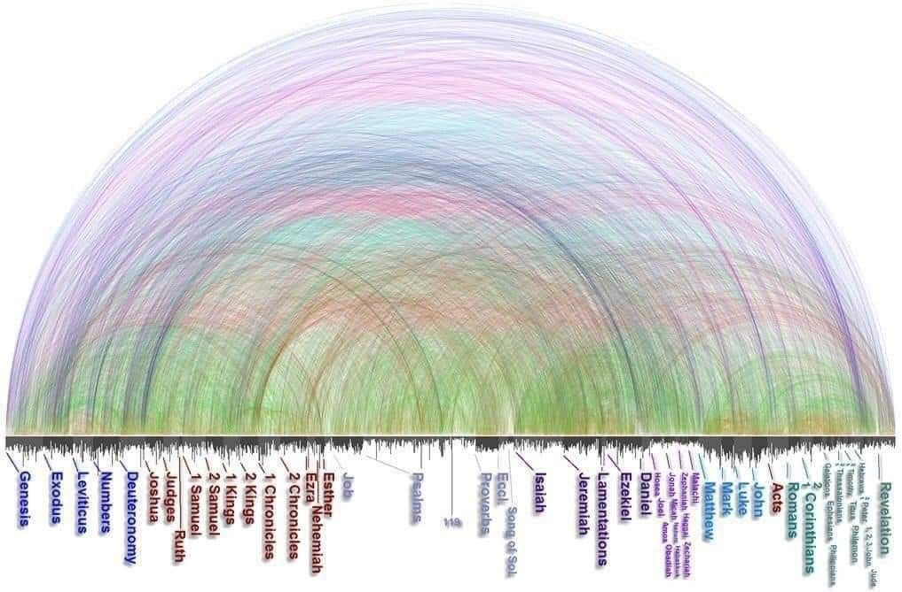
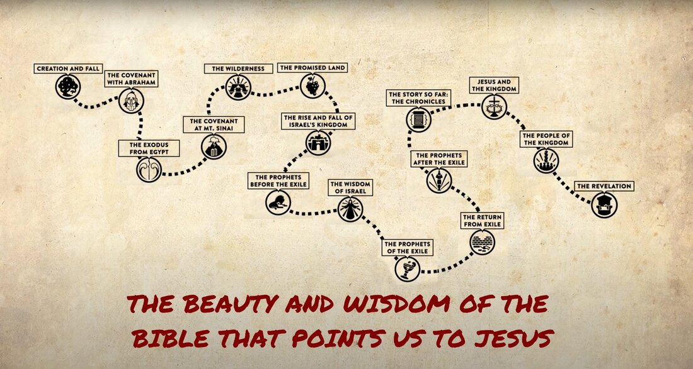

Happy BSF day! Lots of great stuff to talk about tonight.
I recently finished a couple of pet projects that have been on my mind. First, an overview of the entire Bible, book by book, with a timeline attached — that's the second image below. Second, a collection of every place in the Bible where Jesus appears or is presented as God. Of course in the Gospels He states He is God, acts like He is God, and people respond to Him as God — but it's no different in the Old Testament before His incarnation, or in heaven now, or when He returns.


If you want the full write-up on every place Jesus appears or is presented as God, I've put it together in a Google Doc.
Talk with you soon! — Erv
Comments